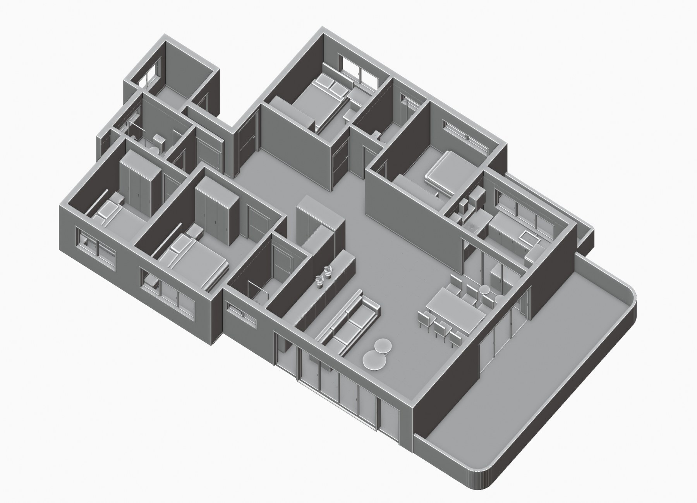

A PERSONAL PRACTICE 2026 — ONGOING
让想法，
成为作品。

SELECTED EXPLORATION — 001从一张平面图，到一个空间。空间建模 / Blender↗SELECTED WORK 少一点陈列，多一点思考。
做过的一些事。
空间 / 影像 / 交互每个作品，都是一次从想法到实现的练习。点击图片，看看背后的过程。
ABOUT THE PRACTICE 保持好奇，也保持动手。
CCR / EXPLORING THROUGH MAKING
好奇心是起点。
做出来，才有答案。
我关注工具如何成为表达的一部分：用建模看清空间，用影像解释复杂的事情，用交互打开新的观看方式。
这里记录的，是我与 AI 工具一起完成的创作实践，以及仍在继续的探索。
01 / SPACE空间与可视化
平面图解读、白模搭建、空间呈现
02 / MOTION影像与内容
信息梳理、视觉编排、动画表达
03 / INTERACTION工具与体验
交互原型、流程探索、持续验证
LET’S MAKE SOMETHING 一个好想法，值得聊一聊。
下一件作品，也许与你有关。
从一句
“你好”开始。
项目咨询、创作合作，或一个新的工作机会。
欢迎带着你的想法，来认识 CCR。
KEEP IN TOUCH / WECHAT
微信联系
二维码即将加入
扫一扫，让想法发生。真实二维码补充后将在此显示